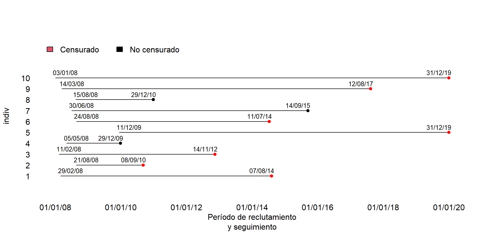
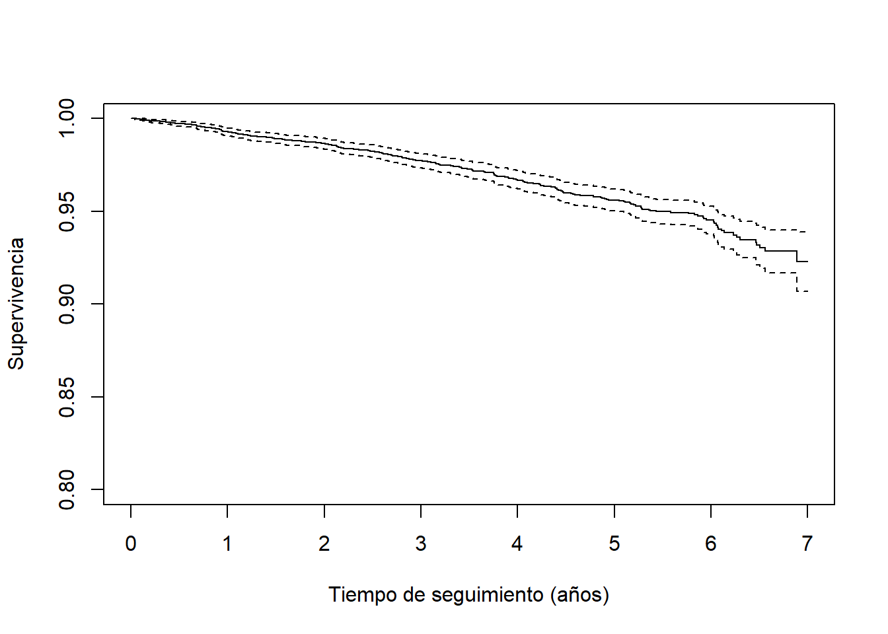
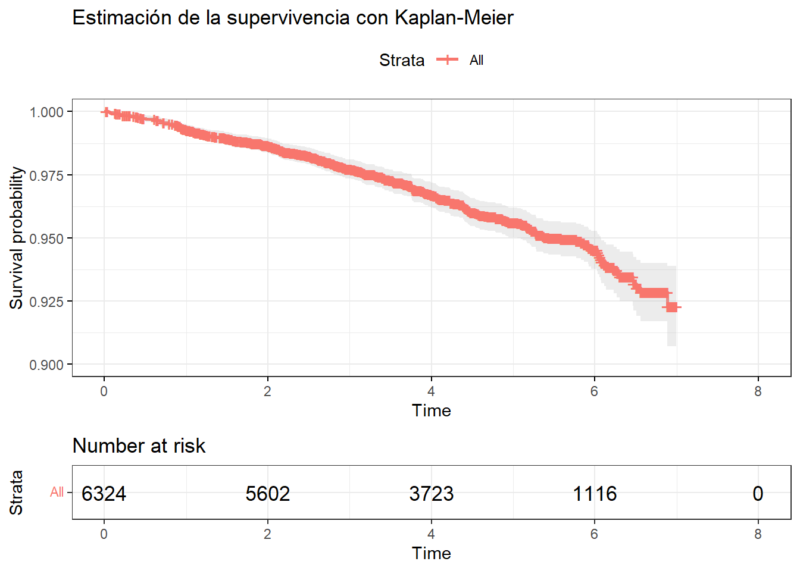
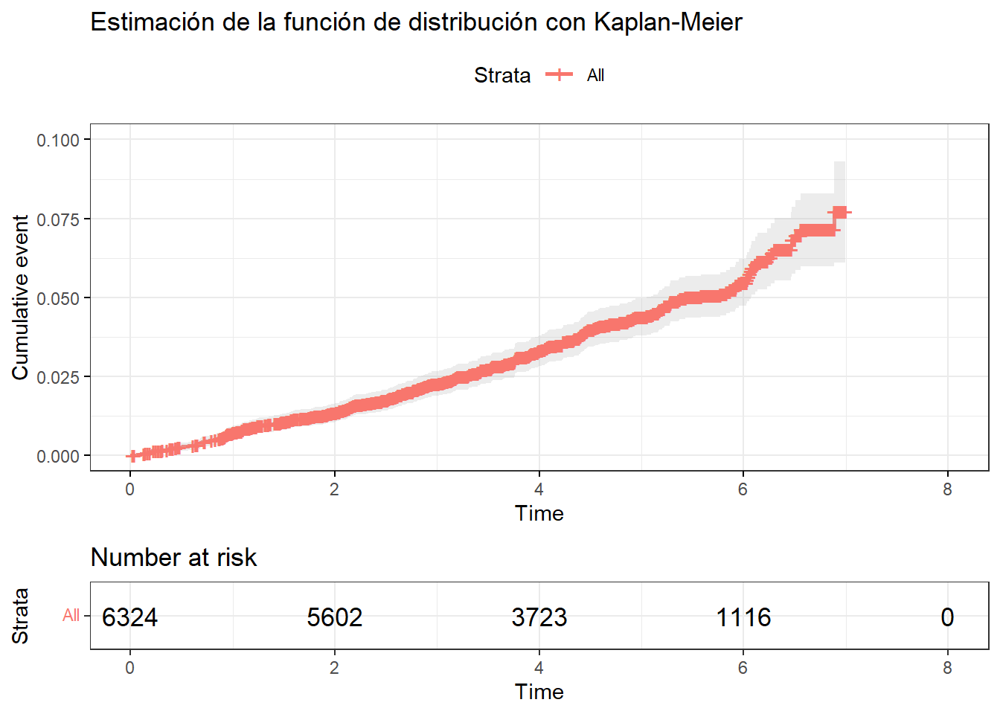
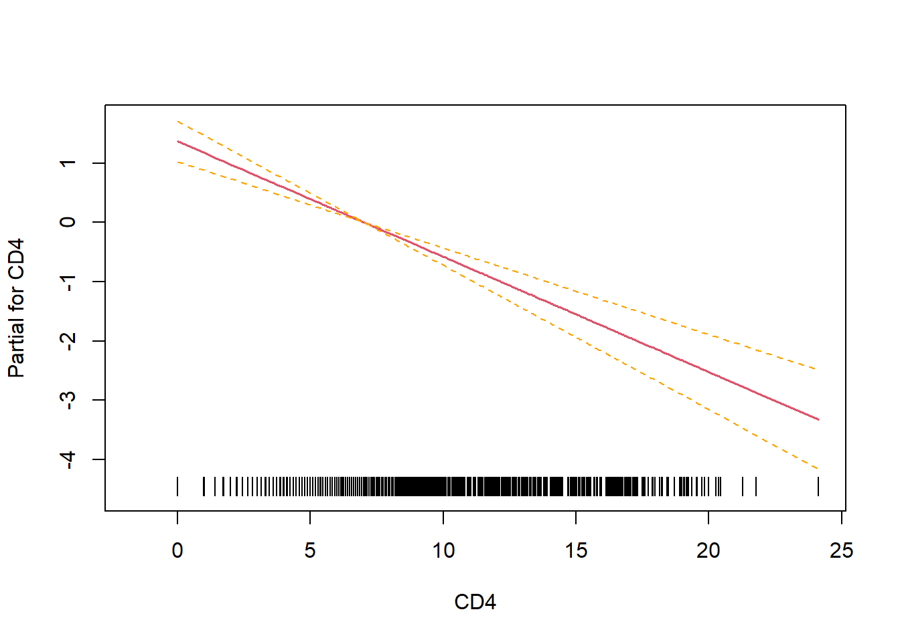

Capítulo 7 Análisis de supervivencia con datos longitudinales
7.1 Tiempo hasta evento
En el análisis de superviviencia la variable respuesta es el tiempo hasta el evento de interés.
Normalente los datos se obtienen de un estudio de cohorte con seguimiento ya sea prospectivo o retrospectivo. Transcurrido el periodo de seguimiento o “follow-up time” puede que para alguno de los individuos de la muestra el evento de interés no se haya observado, ya sea porque ha finalizado el seguimiento o porque se han perdido o han tenido un evento diferente del de interés que ha interrumpido su seguimiento. En estos casos se suele decir que dichos individuos están censurados.
Es muy importante registrar el tiempo que ha pasado des del inicio hasta el evento para los no censurados y también el momento que se ha perdido el seguimiento para los censurados. Así hay que definir bien el momento de inicio y el momento final para cada participante del estudio. Y también es importante que el mecanimso usado para obtener la información del seguimiento sea el mismo para todos.
En la siguiente figura tenemos una descripción de cómo recogeríamos la información para diez individuos donde se observa que cada uno de ellos puede entrar en un momento distinto en el tiempo a partir del inicio del estudio (01/0108), que algunos se observa el evento de interés (puntos negros) y para otros el tiempo está censurado (puntos rojos) bien sea porque se acaba el periodo de seguimiento (01/01/2020) o porque abandonan el estudio antes del final (puntos rojos antes del 01/01/2020)

Normalment lo que hacemos es calcular el tiempo pasando toda la información a “tiempo cero”. La siguiente figura muestra cómo quedarían los datos para el ejemplo anterior
De esta forma, para cada individuo anotaríamos la variable tiempo y crearíamos otra variable 0/1 que sería 0 para aquellos individuos censurados (puntos rojos) y 1 para los que observamos el evento de interés (puntos negros). En la práctica no se habla de variable censurada, si no de la variable evento, y es por eso que codificamos 0 a la censura y 1 a aquellos casos en los que observamos nuestro evento de interés.
7.1.1 Ejemplos
Pacientes diagnosticados de cancer de próstata. Seguimiento hasta recidiva o muerte. El inicio sería la fecha del diagnóstico y la fecha final sería la fechad e recidiva o muerte (para los no censurados) y la fecha de final de seguimiento para los censurados.
Estudio de una cohorte prospectiva a 10 años para estudiar el riesgo de infarto agudo de miocardio incidente. La fecha de inicio sería la fecha de inclusión en el estudio, y la fecha final sería la fecha de ingreso por infarto o muerte por infarto (para los no censurados), y la fecha de final de seguimiento o fecha de muerte por otra causa (para los censurados).
7.1.2 Otros tipos de censura
La censura que se ha descrito es concretamente censura por la derecha. Esto quiere decir que cuando un dato está censurado significa que és superior al tiempo observado.
Existen otros tipo de censura que no estudiaremos:
Censura por la izquierda: el tiempo es menor que el observado.
Censura por intervalo: el tiempo se encuentra entre dos fechas o momentos determinados.
Truncamiento por la izquierda: en realidad no es una censura, sino que es un retraso en el inicio del seguimiento. O sea, que el individuo lleva un tiempo en riesgo pero que ha entrado más tarde en el estudio.
7.2 Kaplan-Meier
El método de Kaplan-Meier se usa para estimar la supervivencia o su complementario, la probabilidad de que el evento ocurra antes del tiempo \(t\).
Si no hubieran eventos censurados antes del tiempo \(t\), la probabilidad de que ocurra el evento en este periodo es simplemente \(d_t/n\) donde \(d_t\) es el númerod e eventos antes de \(t\) y \(n\) el número de individuos de la cohorte. Pero qué pasa cuando un individuo está censurado antes de \(t\)? Lo contamos en el denominador o no? Ambas opciones dan resultados sesgados.
Kaplan-Meier propone un método para estimar el riesgo en cada momento \(t\) (o su supervivencia) que da resultados no sesgados ya que incorpora la información de los individos censurados hasta el momento que fueron seguidos.
Ejemplo
Analizaremos los datos predimed de la librería compareGroups. Se trata de una cohorte con tres grupos de intervención y con un seguimiento de unos 7 años. El evento de interés es el cardiovascular. En este caso, la variable tiempo está recogida en toevent y la variable que indica si un individuo está censurado es event que en este caso está codificada como No y Yes. Notemos que en este caso No correspondería a censura y Yes a no censura, pero que como hemos dicho anteriormente, nos interesa indentificar aquellos individuos cuyo tiemo corresponde al transcurrido hasta que ocurre el evento que estamos estudiando.
library(compareGroups)
data(predimed)
summary(predimed) group sex
Control :2042 Male :2679
MedDiet + Nuts:2100 Female:3645
MedDiet + VOO :2182
age smoke bmi
Min. :49.00 Never :3892 Min. :19.64
1st Qu.:62.00 Current: 858 1st Qu.:27.23
Median :67.00 Former :1574 Median :29.76
Mean :67.01 Mean :29.97
3rd Qu.:72.00 3rd Qu.:32.46
Max. :87.00 Max. :51.94
waist wth htn
Min. : 50.0 Min. :0.3012 No :1089
1st Qu.: 93.0 1st Qu.:0.5839 Yes:5235
Median :100.0 Median :0.6258
Mean :100.4 Mean :0.6283
3rd Qu.:107.0 3rd Qu.:0.6687
Max. :177.0 Max. :1.0000
diab hyperchol famhist hormo
No :3322 No :1746 No :4895 No :5564
Yes:3002 Yes:4578 Yes:1429 Yes : 97
NA's: 663
p14 toevent event
Min. : 0.000 Min. :0.01643 No :6072
1st Qu.: 7.000 1st Qu.:2.85832 Yes: 252
Median : 9.000 Median :4.78850
Mean : 8.678 Mean :4.35517
3rd Qu.:10.000 3rd Qu.:5.79056
Max. :14.000 Max. :6.99795 Para crear una variable censurada por la derecha se usa la función Surv del package survival.
library(survival)Si la variable evento está codificada como 0/1 (0: censura 1:evento), como se suele tener habitualmente, basta con escribir:
Surv(predimed$toevent, predimed$event)En nuestro caso como la variable event es ‘No’ ‘Yes’, deberíamos indicar qué valor indica evento en la variable event
library(survival)
Surv(predimed$toevent, predimed$event=='Yes')[1:10] [1] 5.37440109 6.09719372+ 5.94661188+ 2.90759754
[5] 4.76112270+ 3.14852834 0.71457905+ 4.90075302+
[9] 0.04380561 0.88158798+Notemos que se crea una nueva variable donde aquellos individuos censurados tiene un ‘+’
La función de supervivencia se puede estimar con el estimador de Kaplan-Meier mediante:
ss <- survfit(Surv(toevent, event=='Yes')~1, data=predimed)Y podemos ver dichas estimaciones (para los primeros 6 tiempos de eventos) con la instrucción
summary(ss, times=1:6)Call: survfit(formula = Surv(toevent, event == "Yes") ~ 1, data = predimed)
time n.risk n.event survival std.err lower 95% CI
1 6196 45 0.993 0.00106 0.991
2 5602 39 0.986 0.00147 0.984
3 4524 48 0.977 0.00196 0.973
4 3723 44 0.967 0.00250 0.962
5 2803 38 0.956 0.00301 0.950
6 1116 23 0.945 0.00380 0.938
upper 95% CI
0.995
0.989
0.981
0.972
0.962
0.953Normalmente lo que se suele hacer es visualizar las curvas de supervivencia mediante la instrucción
ans.km <- survfit(Surv(toevent, event=='Yes') ~ 1, predimed)
plot(ans.km, ylim=c(0.8,1),
xlab="Tiempo de seguimiento (años)",
ylab="Supervivencia")
Si quisiéramos calcular Kaplan-Meier para distrintos grupos, por ejemplo para el los distintos grupos de intervención de nuestro estudio, bastaría con escribir:
ans.km.group <- survfit(Surv(toevent, event=='Yes') ~ group, predimed)
plot(ans.km.group, ylim=c(0.8,1),
xlab="Tiempo de seguimiento (años)",
ylab="Supervivencia", col=1:3)
legend("bottomleft", levels(predimed$group),
lty=1, col=1:3, bty="n")Finalmente, podemos comparar las curvas de supervivencia entre grupos con la función survdiff que tiene implementado por defecto, el test de log-rank:
survdiff(Surv(toevent, event=='Yes') ~ group, predimed)Call:
survdiff(formula = Surv(toevent, event == "Yes") ~ group, data = predimed)
N Observed Expected
group=Control 2042 97 75.4
group=MedDiet + Nuts 2100 70 82.7
group=MedDiet + VOO 2182 85 93.9
(O-E)^2/E (O-E)^2/V
group=Control 6.194 8.85
group=MedDiet + Nuts 1.946 2.90
group=MedDiet + VOO 0.848 1.35
Chisq= 9 on 2 degrees of freedom, p= 0.01 Podemos concluir que las diferencias observadas en las curvas de supervivencia, son significativamente distintas ya que el p-valor del test de log-rank es $<0.5%.
Este test considera que todas las diferencias observadas a lo largo del tiempo son igual de imporatantes. A veces, queremos dar más peso a las diferencias observadas al inicio del estudio. En ese caso, el test más potente es el del Wilcoxon que puede calcularse de la misma manera, pero usando el argumento rho=1
survdiff(Surv(toevent, event=='Yes') ~ group, predimed, rho = 1)Call:
survdiff(formula = Surv(toevent, event == "Yes") ~ group, data = predimed,
rho = 1)
N Observed Expected
group=Control 2042 95.0 73.6
group=MedDiet + Nuts 2100 68.1 80.7
group=MedDiet + VOO 2182 82.7 91.6
(O-E)^2/E (O-E)^2/V
group=Control 6.222 9.11
group=MedDiet + Nuts 1.952 2.98
group=MedDiet + VOO 0.857 1.40
Chisq= 9.3 on 2 degrees of freedom, p= 0.01 Llegamos a la misma conclusión que con el test de log-rank, pero notemos que el valor del estadistico (Chisq) es ligeramente superior, por lo que el p-valor es menor (es decir, más significativo) y nos daría más evidencias en contra de la hipótesis nula (notemos que aquí vemos 0.01 en ambos casos por un tema de redondeo).
Podemos mejorar la visualización usando la función ggsurvplot () de la librería survminer. Una caída vertical en las curvas indica un evento. Una marca vertical en las curvas significa que un individuo fue censurado.
library(survminer)
ggsurvplot(
ans.km, ylim=c(0.9,1),
pval = TRUE,
conf.int = TRUE,
risk.table = TRUE,
ggtheme = theme_bw(),
title = "Estimación de la supervivencia con Kaplan-Meier"
)
NOTA: la opción pval=TRUE nos permitiría ver el p-valor de Kaplan-Meier en el gráfico, pero puesto que hemos indicado que el eje Y se vea sólo de 0.9 a 1, el p-valor no se ve. Si se vería en caso de quitar la opción de ylim aunque entonces las curvas se verían muy juntas. Existen opciones para poder “tunear” esta visualización usando la función annotate().
7.3 Funciones involucradas en el análisis de supervivencia
Aparte de la función de supervivencia que se define como:
- Supervivencia: probabilidad de estar libre de evento en el momento \(t\) (se supone que el evento ocurre después)
\[S(t) = \text{Pr}(T>t)\]
Existen otras medidas para resumir este tipo de estudios que pueden ser interesantes según el contexto. Por ejemplo, si nos interesa cuantificar la probabilidad de observar nuestro evento de interés (normalemete cuanod el evento no es “malo” como en el análisis de supervivencia tradicional que el evento es la muerte) podemos calcular la función de:
- Distribución: probabilidad de evento antes de tiempo \(t\). Es el complementario de la función de supervivencia
\[\text{Pr}(T\leq t) = 1-S(t)\]
Otras medidas interesantes son:
- Hazard (riesgo instantaneo): Es la probabilidad que ocurra el evento en un intervalo infinitamente pequeño dado que no lo ha tenido hasta el momento \(t\)
\[\lambda(t) = \lim_{\delta \rightarrow 0} \frac{\text{Pr}\left(T \in (t, t+\delta) \right)}{S(t)} \]
- Cumulative Hazard (riesgo acumulado): es la suma o integral del riesgo instantáneo hasta el momento \(t\)
\[\Lambda(t) = \int_{0}^{t} \lambda(s) ds\] Existe la siguiente relación entre el riesgo acumulado y la función de supervivencia
\[S(t) = \text{exp} \left(-\Lambda(t)\right)\] o bien
\[\Lambda(t) = -\text{ln}\left(S(t)\right)\]
Todas estas funciones se pueden calcular conla función ggsurvplot() cambiando el argumento fun. Por ejemplo la función de probabilidad se calcularía mediante la opción “event” y la de riesgo acumulado con “cumhaz”
ggsurvplot(
ans.km, ylim=c(0,.1),
fun = "event",
conf.int = TRUE,
risk.table = TRUE,
ggtheme = theme_bw(),
title = "Estimación de la función de distribución con Kaplan-Meier"
)
7.4 Modelo de regresión de Cox
Normalmente queremos estudiar cómo influye más de una variable en la supervivencia. Para este caso, necesitamos utilizar modelos de regresión. Los modelos de regresión de Cox sirven para evaluar el efecto de distintas variables sobre el tiempo hasta el evento, o para crear un moelo de predicción.
Los modelos de cox asumen riesgos proporcionales, esto es, se separa el riesgo (“Hazard”) de paceder un evento antes del momento \(t\) como un producto del
\(\Lambda_0(t)\): riesgo basal, cuando todas las variables independientes \(x\) valen cero) y
\(\sum_{k=1} \beta_k x_{ik}\): combinación lineal de las variables independientes (predictor lineal).
\[\Lambda(t|\vec{x}_i) = \Lambda_0(t)\cdot \text{exp}\left(\sum_{k=1} \beta_k x_{ik}\right)\]
donde los coeficientes \(\beta_k\) son los log-Hazard Ratios.
Cox propone un método para estimar los coeficientes \(\beta_k\) sin suponer ninguna distribución sobre la variable respuesta \(T\) (tiempo hasta evento). Por esto se llama método semiparamétrico y se basa en estimar la “partial-likelihood”.
Existen otros métodos que suponen una distribución de la \(T\), y por lo tanto parametrizan la incidencia basal \(\Lambda_0(t)\). Por ejemplo,la regresión de Weibull que supone una distribución Weibull sobre \(T\). Una de las ventaja que tienen los métodos no paramétricos es que permiten estimar la media o la mediana de \(T\) aunque más de la mitad de los individuos de la muestra estén censurados (o sea, que no se llegue al 50% de eventos en el seguimiento). La desventaja es que suponen una distribución sobre \(T\) que puede no ser correcta y que conllevaría a resultados sesgados. En biomedicina, el método más usado es el de los modelos de Cox y es el que estudiaremos en este curso.
Ejemplo
Para ajustar un modelo de Cox en R se usa la función coxph de la librería survival.
modelo <- coxph(Surv(toevent, event=='Yes')~age+sex+p14+group, predimed)Hay diferentes aspectos a validar del modelo de Cox. Entre ellos la proporcionalidad de los efectos. Quiere decir que se supone que las \(\beta_k\) no dependen del tiempo (por ejemplo, el efecto del sexo es el mismo tanto a 1 años como a 5 años). Ésto se puede comprovar mediante la siguiente función:
cox.zph(modelo) chisq df p
age 0.33102 1 0.565
sex 0.17845 1 0.673
p14 0.00189 1 0.965
group 5.75156 2 0.056
GLOBAL 6.35652 5 0.273Aparece un p-valor para cada variable y uno global. En este caso parece que se cumple la proporcionalidad para todas las variables ya que el p-valor no es \(<0.05\) y por lo tanto no podemos rechazar la hipótesis nula que es que los riesgos son proporcionales. No obstante, si no se cumpliera la proporcionalidad de una variable categórica, por ejemplo el sexo, ésta se puede poner como strata (se asume una curva de indidencia basal \(\Lambda_0(t)\) para cada sexo) y se solucionaría el problema. Cuando esto no ocurre para una variable continua, debemos hacer modelos más avanzados que contemplan la posibilidad de introducir en el modelo una variable dependiente del tiempo (que veremos más adelante).
modelo2 <- coxph(Surv(toevent, event=='Yes')~age+strata(sex)+p14+group, predimed)
summary(modelo2)Call:
coxph(formula = Surv(toevent, event == "Yes") ~ age + strata(sex) +
p14 + group, data = predimed)
n= 6324, number of events= 252
coef exp(coef) se(coef)
age 0.06790 1.07026 0.01010
p14 -0.12221 0.88497 0.03046
groupMedDiet + Nuts -0.39498 0.67369 0.15771
groupMedDiet + VOO -0.31459 0.73009 0.14894
z Pr(>|z|)
age 6.720 1.82e-11 ***
p14 -4.012 6.03e-05 ***
groupMedDiet + Nuts -2.505 0.0123 *
groupMedDiet + VOO -2.112 0.0347 *
---
Signif. codes:
0 '***' 0.001 '**' 0.01 '*' 0.05 '.' 0.1 ' ' 1
exp(coef) exp(-coef) lower .95
age 1.0703 0.9344 1.0493
p14 0.8850 1.1300 0.8337
groupMedDiet + Nuts 0.6737 1.4844 0.4946
groupMedDiet + VOO 0.7301 1.3697 0.5453
upper .95
age 1.0917
p14 0.9394
groupMedDiet + Nuts 0.9177
groupMedDiet + VOO 0.9776
Concordance= 0.652 (se = 0.018 )
Likelihood ratio test= 71.75 on 4 df, p=1e-14
Wald test = 72.99 on 4 df, p=5e-15
Score (logrank) test = 73.94 on 4 df, p=3e-15En este gráfico se obtiene una curva de supervivencia para cada sexo, ajustado por las demás covariables (nota que en esta gráfica se asume que el efecto de las demás covariables es el mismo para ambos sexos).
plot(survfit(modelo2), ylim=c(0.8,1), lty=1:2)
legend("bottomleft", levels(predimed$sex), lty=1:2, bty="n")7.4.1 Efectos tiempo-dependientes
El efecto tiempo-dependiente (no confundir con variables tiempo-dependientes) se da cuando el efecto de una variable \(\beta_k\) no es constante a lo largo del tiempo. En este caso, como se ha comentado anteriormente, si se trata de una variable categórica se puede poner en el modelo como strata. Si se trata de una variable continua, se puede incorporar la interacción de la variable \(x_k\) con el tiempo.
Otra estrategia que se usa habitualmente es dividir el tiempo de seguimiento en dos o tres tramos (a corto y a largo plazo), y realizar análisis por separado.
De la anterior ecuación sobre la incidencia acumulada, se suponía que los efectos eran fijos y no dependían del tiempo. Pero si dependieran del tiempo en general se debería reescribir como:
\[\Lambda(t|\vec{x}_i) = \Lambda_0(t)\cdot \text{exp}\left(\sum_{k=1} \color{blue}{\beta_k(t)} x_{ik}\right)\] donde \(\beta_k(t)\) representa una función del tiempo.
Este tipo de modelos con efectos tiempo dependientes no los veremos en este curso, sin embargo nos centraremos en otro aspecto fundamental que se da en estudios longitudinales que es el hecho de recoger una variable explicativa en distintos momentos del tiempo (variales tiempo-dependientes).
7.4.2 Variables tiempo-dependientes (datos longitudinales)
Los modelos con variables tiempo-dependientes se tienen cuando en el seguimiento de los individuos de la muestra también se han ido actualizando los valores de todas o algunas de las variables indepndientes (\(x_k\)). Por ejemplo, el nivel de colesterol se puede recoger al inicio del estudio e introducir esa variable en el modelo de Cox para ver si influencia en el tiempo hasta sufrir un infarto de miocardio, pero también podemos recoger el nivel de colesterol en distintos momentos temporales y ver si esta variable cambiante a lo largo del tiempo se asocia con nuestro evento de interés.
Así pues, en cada momento \(t\) el riesgo acumulado se tiene que estimar teniendo en cuenta el valor que toma cada \(x_k\) en dicho tiempo \(t\). Esto se puede formular de la siguiente manera
\[\Lambda(t|\vec{x}_i = \Lambda_0(t)\cdot \text{exp}\left(\sum_{k=1} \beta_k \color{blue}{x_{itk}}\right)\] donde \(x_{itk}\) representa el valor de la variable \(x_k\) del individuo \(i\) en el momento \(t\)
7.4.3 Estructura de los datos
Para ajustar estos modelos, el reto principal (y único), es estructurar bien la base de datos. Así, para cada individuo tendremos tantas filas como actualizaciones tengamos de cada variable \(x_k\). Además hay que anotar el momento de estos cambios. Adicionalemente tendremos una fila final donde se indicará el tiempo de evento o censura para nuestro evento de interés.
Veámoslo con un ejemplo: Utilizaremos la base de datos aids de la librería JM
library(JM)
data(aids)
head(aids) patient Time death CD4 obstime drug gender
1 1 16.97 0 10.677078 0 ddC male
2 1 16.97 0 8.426150 6 ddC male
3 1 16.97 0 9.433981 12 ddC male
4 2 19.00 0 6.324555 0 ddI male
5 2 19.00 0 8.124038 6 ddI male
6 2 19.00 0 4.582576 12 ddI male
prevOI AZT start stop event
1 AIDS intolerance 0 6.00 0
2 AIDS intolerance 6 12.00 0
3 AIDS intolerance 12 16.97 0
4 noAIDS intolerance 0 6.00 0
5 noAIDS intolerance 6 12.00 0
6 noAIDS intolerance 12 18.00 0En esta base de datos tenemos diferentes participantes en los que se ha tomado distintas medidas de la variable CD4. La variable obstime indica cuándo se han tomado las medidas de CD4. Mientras que la variable time y death indica el tiempo observado y si el individuo se ha muerto (1) o sigue vivo (0, dato censurado) al finalizar el seguimiento. En este caso el evento de interés es la muerte y los individuos vivos serán los censurados. La variable tiempo-dependiente es la variable CD4. Nuestro objetivo final es demostrar si hay diferencias en la mortalidad entre dos fármacos (variable ‘drug’: ddI = didanosine; ddC = zalcitabine.) ajustando por la variable ‘gender’.
Para ajustar un modelo con variables tiempo-dependientes se ha de reestructurar esta base de datos. Para ello debemos llevar a cabo los siguientes pasos
- Creamos una base de datos con una fila por individuo, con los tiempos de muerte y las covariables de interés (fijas, no cambiantes a lo largo del tiempo - en nuestro caso ‘drug’ , ‘gender’) y creamos la variable
endpt.
temp <- aids %>% dplyr::select(patient, Time, death, drug, gender)
x <- rep(1,nrow(temp))
datos <- aggregate(x, temp, sum)
datos <- tmerge(datos, datos, id=patient, endpt = event(Time, death))
head(datos) patient Time death drug gender x tstart tstop
1 351 12.27 0 ddC female 4 0 12.27
2 305 12.30 0 ddC female 2 0 12.30
3 336 12.57 0 ddC female 3 0 12.57
4 268 12.73 0 ddC female 4 0 12.73
5 160 13.20 0 ddC female 3 0 13.20
6 377 13.50 0 ddC female 4 0 13.50
endpt
1 0
2 0
3 0
4 0
5 0
6 0- Luego, hacemos uso de la función
tmerge()para crear la base de datos en el formato deseado. Las variables tiempo dependientes se especifican mediante la funcióntdcen que se indica también la variable que recoge cuando se han tomado sus medidas (en nuestro caso ‘obstime’).
aids2 <- tmerge(datos, aids, id=patient, CD4 = tdc(obstime, CD4))
head(aids2) patient Time death drug gender x tstart tstop
1 351 12.27 0 ddC female 4 0 2.00
2 351 12.27 0 ddC female 4 2 6.00
3 351 12.27 0 ddC female 4 6 12.00
4 351 12.27 0 ddC female 4 12 12.27
5 305 12.30 0 ddC female 2 0 6.00
6 305 12.30 0 ddC female 2 6 12.30
endpt CD4
1 0 5.477226
2 0 6.403124
3 0 4.690416
4 0 4.000000
5 0 2.000000
6 0 2.4494907.4.4 Ajuste del modelo
En esta nueva base de datos, tenemos intervalos de tiempo tstart y tstop que se usará como tiempos de supervivencia en la función Surv y que ayuda a dividir el seguimento en los intervalos donde CD4 has sido observado de forma diferente para cada invididuo. Con esta información, podremos usar la función coxph () de la forma habitual, pero usando esta nueva escala de tiempo:
modelo <- coxph(Surv(tstart, tstop, endpt) ~ CD4 + drug + gender, data=aids2)
summary(modelo)Call:
coxph(formula = Surv(tstart, tstop, endpt) ~ CD4 + drug + gender,
data = aids2)
n= 1405, number of events= 188
coef exp(coef) se(coef) z
CD4 -0.19440 0.82333 0.02434 -7.986
drugddI 0.31698 1.37298 0.14669 2.161
gendermale -0.32579 0.72196 0.24248 -1.344
Pr(>|z|)
CD4 1.4e-15 ***
drugddI 0.0307 *
gendermale 0.1791
---
Signif. codes:
0 '***' 0.001 '**' 0.01 '*' 0.05 '.' 0.1 ' ' 1
exp(coef) exp(-coef) lower .95 upper .95
CD4 0.8233 1.2146 0.7850 0.8636
drugddI 1.3730 0.7283 1.0299 1.8303
gendermale 0.7220 1.3851 0.4489 1.1612
Concordance= 0.697 (se = 0.018 )
Likelihood ratio test= 96.28 on 3 df, p=<2e-16
Wald test = 67.58 on 3 df, p=1e-14
Score (logrank) test = 75.22 on 3 df, p=3e-16Notemos que que tanto las variables tiempo-dependientes (en este caso CD4) como las no-tiempo-dependientes (drug y gender) se ponen de la misma manera y de forma habitual en la fórmula.
La interpretación de los resultados es exactamente la misma que para un modelo de Cox sin variables tiempo-dependientes.
Comparación con el modelo sin variables tiempo-dependientes
Estos resultados los podríamos comparar con el caso en el que consideráramos la primera medida de CD4 como una variable fija a lo largo del tiempo:
aids1obs <- subset(aids, obstime==0)
modelo1obs <- coxph(Surv(Time, death) ~ CD4 + drug + gender, aids1obs)
summary(modelo1obs)Call:
coxph(formula = Surv(Time, death) ~ CD4 + drug + gender, data = aids1obs)
n= 467, number of events= 188
coef exp(coef) se(coef) z
CD4 -0.18295 0.83281 0.02222 -8.232
drugddI 0.26694 1.30597 0.14648 1.822
gendermale -0.20238 0.81679 0.24216 -0.836
Pr(>|z|)
CD4 <2e-16 ***
drugddI 0.0684 .
gendermale 0.4033
---
Signif. codes:
0 '***' 0.001 '**' 0.01 '*' 0.05 '.' 0.1 ' ' 1
exp(coef) exp(-coef) lower .95 upper .95
CD4 0.8328 1.2008 0.7973 0.8699
drugddI 1.3060 0.7657 0.9801 1.7403
gendermale 0.8168 1.2243 0.5081 1.3129
Concordance= 0.703 (se = 0.019 )
Likelihood ratio test= 92.54 on 3 df, p=<2e-16
Wald test = 70.82 on 3 df, p=3e-15
Score (logrank) test = 78.19 on 3 df, p=<2e-16Notemos que utilizando este modelo, nuestra conclusión sería que no hay diferencias en la supervivencia entre fármacos (‘drug’) mientras que el modelo utilizando datos longitudinales para CD4 muestra que la didanosine (ddI) tiene una peor supervivencia (p = 0.0307).
Una vez más se demuestra que, en estadística, uno puede usar cualquier modelo para analizar sus datos y obtener resultados similares (en este segundo modelo casi sale significativo). Sin embargo, si no se utiliza el modelo correcto el perjudicado es el investigador, ya que, la utilización del modelo correcto proporciona el test más potente para detectar diferencias cuando realmente las hay. Es como el caso de analizar una variable 0,1 para comparar dos grupos y usar la t de Student. R nos dará un p-valor, pero este no será el test más potente para encontrar diferencias cuando realmente las haya, ya que ese test es el más potente cuando los datos son normales. Es por ello que en estos casos se usa la chi-cuadrado.
Validación del modelo
La validación del modelo con variables tiempo-dependientes se hace de la misma manera que para el modelo de Cox “clásico”. Por ejemplo, también se puede aplicar la función coxz.ph. Sin embargo, la discriminación y la calibración que necesitan del cálculo del riesgo predicho a tiempo \(t_0\) no és fácil de calcular: ¿cómo se tiene en cuenta que el valor de \(x_k\) cambia y que ello conlleva a un cambio del riesgo acumulado \(\Lambda\)?.
cox.zph(modelo) chisq df p
CD4 0.2875 1 0.59
drug 0.0034 1 0.95
gender 1.6437 1 0.20
GLOBAL 1.9692 3 0.58Términos no lineales: “splines”
También, como en los modelo de Cox “clásicos” se pueden introducir términos polinómicos o de splines (psplines) para modelar efectos no lineases de las variables \(x_k\) cuantitativas.
modelo.splines <- coxph(Surv(tstart, tstop, endpt) ~ pspline(CD4) + drug + gender, data=aids2)
coef(summary(modelo.splines)) coef se(coef)
pspline(CD4), linear -0.1900175 0.02553879
pspline(CD4), nonlin NA NA
drugddI 0.3164310 0.14684398
gendermale -0.3282002 0.24253118
se2 Chisq DF
pspline(CD4), linear 0.02527049 55.358799 1.000000
pspline(CD4), nonlin NA 5.669855 3.092747
drugddI 0.14682270 4.643503 1.000000
gendermale 0.24249275 1.831229 1.000000
p
pspline(CD4), linear 1.004194e-13
pspline(CD4), nonlin 1.367478e-01
drugddI 3.117131e-02
gendermale 1.759825e-01termplot(modelo, terms=1, se=TRUE, rug=TRUE)
en nuestro ejemplo, se demuestra que el efecto de CD4 es lineal (no hay términos cuadráticos, ni cúbicos, ni puntos de inflexión o cambios de tendencias, …) por lo que el modelo sin splines ya sería suficiente para modelar nuestros datos.